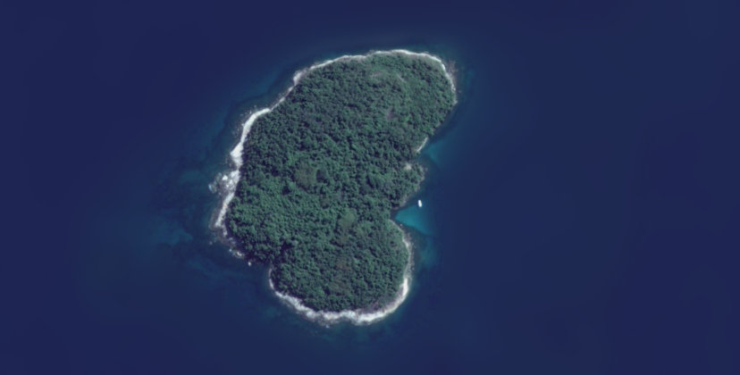
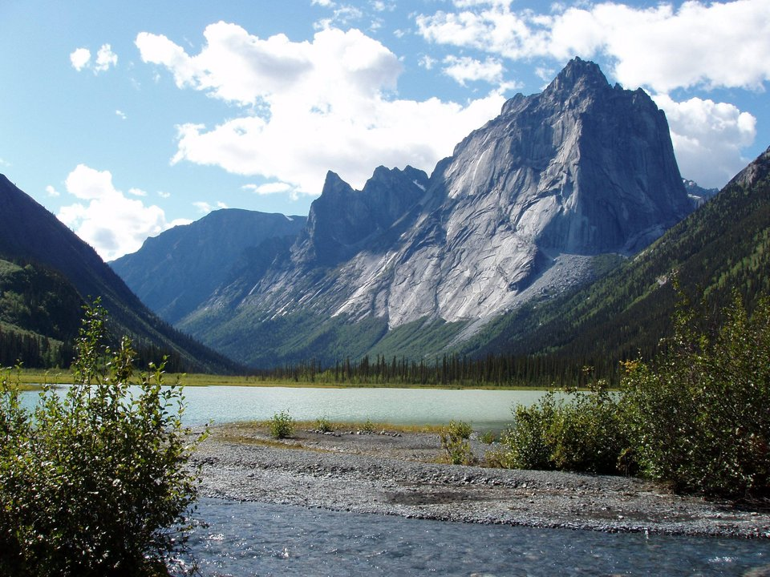
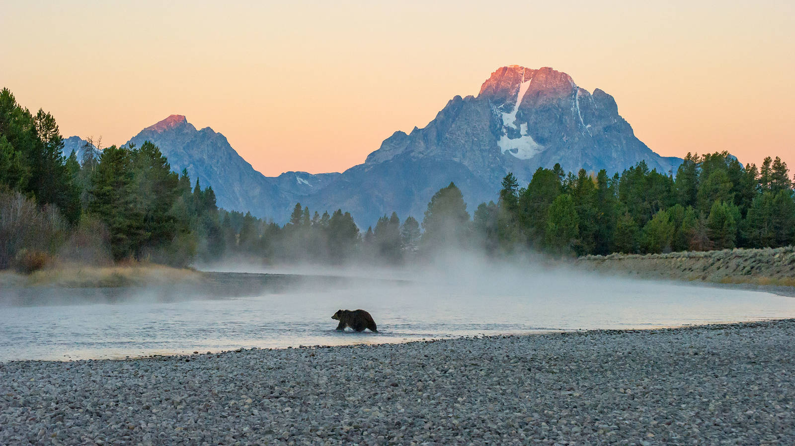
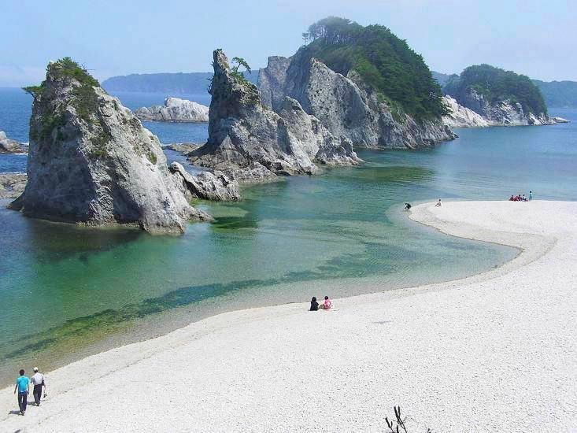
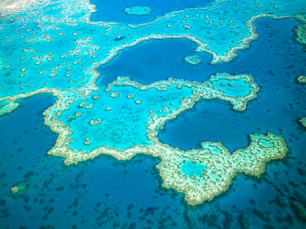
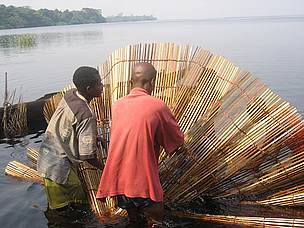

Protected Areas in The World
IUCN [1] Definition 2008:
A protected area is a clearly defined geographical space, recognised, dedicated and managed, through legal or other effective means, to achieve the long term conservation of nature with associated ecosystem services and cultural values.

Protected Areas contribute to preserve biodiversity because they can prevent, or limit, the exploitation of natural resources of entire ecosystems. The main strategy is to involve the local comunities, who can benefit greatly from conservation through the use of clean water supply, natural medicine, protection from natural disasters, opportunities for outdoor activities, diversification of local economies and even preserving cultural aspects and heritage, specially for aboriginal people.
The effectiveness of Protect Areas in mitigating and adapting to climate change has been increasingly recognized around the world. They also represent an important tool to achieve the Sustainable Development Goals for 2030, which was adopted by all United Nations States in 2015.
Accordingly to IUCN, there are seven different types of Protected Areas, categorized by their management objectives. This classification is recognized by the UN and adopted for many countries to create and manage national laws.
Protected Area Categories [2]
- Strict Nature Reserve 
- Wilderness Area
- National Park
- Natural Monument or Feature
- Habitat/Species Management Area
- Protected Landscape/Seascape
- Protected Area with sustainable use of natural resources
Strictly protected areas set aside to protect biodiversity and also possibly geological/geomorphical features, where human visitation, use and impacts are strictly controlled and limited to ensure protection of the conservation values. Such protected areas can serve as indispensable reference areas for scientific research and monitoring.
Example of Strict Nature Reserve: Imboassica Island, Angra dos Reis, Brazil
Wilderness areas are usually large unmodified or slightly modified areas, retaining their natural character and influence without permanent or significant human habitation, which are protected and managed so as to preserve their natural condition.
Example of Wilderness Area: Nahhani National Park, Northwest Territories, Canada
National Parks are large natural or near natural areas set aside to protect large-scale ecological processes, along with the complement of species and ecosystems characteristic of the area, which also provide a foundation for environmentally and culturally compatible, spiritual, scientific, educational, recreational, and visitor opportunities.
Example of National Park: Yellowstone National Park, United States
Natural Monument or Feature set aside to protect a specific natural monument, which can be a landform, sea mount, submarine cavern, geological feature such as a cave or even a living feature such as an ancient grove. They are generally quite small protected areas and often have high visitor value.
Example of Natural Monument: Jodogahama, Miyako, Japan

Habitat/Species Management Area aim to protect particular species or habitats and management reflects this priority. Many protected areas in this category will need regular, active interventions to address the requirements of particular species or to maintain habitats, but this is not a requirement of the category.

Protected Landscape/Seascape is where the interaction of people and nature over time has produced an area of distinct character with significant, ecological, biological, cultural and scenic value: and where safeguarding the integrity of this interaction is vital to protecting and sustaining the area and its associated nature conservation and other values.

Protected Area with sustainable use of natural resources conserve ecosystems and habitats together with associated cultural values and traditional natural resource management systems. They are generally large, with most of the area in a natural condition, where a proportion is under sustainable natural resource management and where low-level non-industrial use of natural resources compatible with nature conservation is seen as one of the main aims of the area
Largest Protected Areas
A recent report from IUCN released in 2018 shows that a total of 15% of terrestrial and 7% of marine areas now covered by protected areas. [3]
Considering the total area, the 6 largest protected areas in the globe are marine: [4]
- Marae Moana (Cook Islands - 1,976,000 Km2)
- Ross Sea Region Marine Protected Area (Antarctica - 1,555,851 Km2)
- Papahānaumokuākea Marine National Monument (Hawaii - 1,508,870 Km 2)
- Natural Park of the Coral Sea (New Caledonia - 1,292,967 Km2)
- Pacific Remote Islands Marine National Monument (US - 1,277,860 Km2)
- South Georgia Marine Protected Area (South Georgia and South Sandwich Islands - 1,070,000 Km2)
Back to Top
Back to index